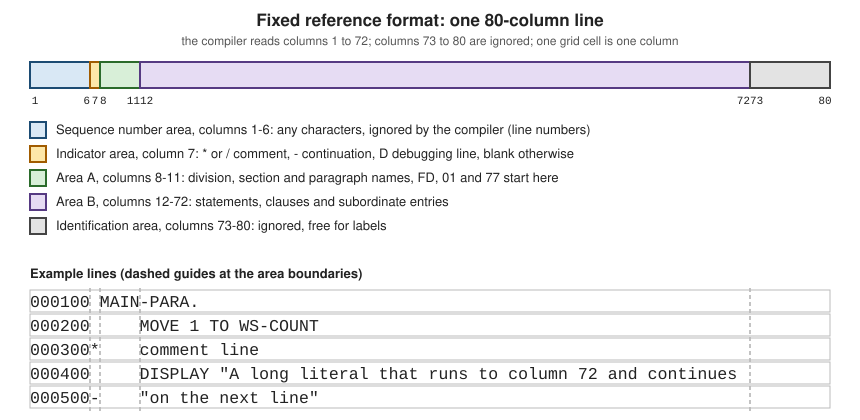

Reference Format: Fixed and Free
|
This content was generated with the assistance of AI and should be verified against the official documentation before being relied on in production. |
This page is written against ISO/IEC 1989:2023 (edition 3, January 2023), GnuCOBOL 3.2 and IBM Enterprise COBOL for z/OS 6.5 (PTFs through September 2026), and was checked on 2026-10-20. Fixed reference format comes from the earliest COBOL standards and is the format of virtually all code on z/OS; free format was added by COBOL 2002 and is kept by the 2014 and 2023 editions. Every portable example was compiled with cobc -x -Wall in GnuCOBOL 3.2.0 (and with -std=ibm where it says so), run, and the output and diagnostics shown are real. Examples that are deliberately wrong say so. The next page of the section, Words, Literals and Figurative Constants, covers what goes inside the columns (separators, literals and their continuation rules in more detail), and Program Structure and Divisions covers what must be written in Area A at each level.
Reference format is the set of rules that says where on a line each part of a COBOL source statement may be written. It exists because COBOL was designed for 80-column punched cards, and it survives because every existing COBOL program, copybook and tool still assumes it. Nothing about it affects what a program does once compiled; a wrong column, however, changes how the compiler reads the line, and the compiler often reports a confusing message several lines away.
The 80-column line
In fixed reference format a source line is a card image of up to 80 columns, divided into five fixed areas. The compiler reads only columns 1 to 72.

The figure shows the five areas as colour-coded boxes and, below them, five typical lines with dashed guides at columns 7, 8, 12 and 73.
| Area | Columns | Use |
|---|---|---|
Sequence number area |
1-6 |
Any characters. The compiler ignores them. Historically the card sequence number, so a dropped deck could be re-sorted; today usually blank, line numbers inserted by an editor, or a change-flag. |
Indicator area |
7 |
Blank for a normal line. |
Area A |
8-11 |
Division headers, section headers, paragraph names, |
Area B |
12-72 |
Statements, clauses, and entries other than those above (level numbers |
Identification area (program-identification area) |
73-80 |
Ignored by the compiler. Historically a program name or a card label. |
IBM’s Language Reference states the same layout for Enterprise COBOL: a 72-character line made of the sequence number area (columns 1 to 6), the indicator area (column 7), Area A (columns 8 to 11) and Area B (columns 12 to 72), with continuation lines written by coding a hyphen in the indicator area. GnuCOBOL’s manual describes -fixed the same way, except that its text calls columns 72 to 80 the "reference area", which should read 73 to 80 (the manual’s own column 72 is also the last program-text column).
A complete program in fixed format
The program below shows every ordinary use of the indicator area apart from the debugging line: a comment line, a page-eject comment, and a literal continued on a second line. It uses the Circulation scenario’s notice text. Note how the paragraph name starts in column 8 (Area A) and every statement starts in column 12 (Area B).
000100* Circulation: areas and indicators in fixed reference format
000200 IDENTIFICATION DIVISION.
000300 PROGRAM-ID. FIXED1.
000400 DATA DIVISION.
000500 WORKING-STORAGE SECTION.
000600 01 WS-NOTICE.
000700 05 WS-GREETING PIC X(13) VALUE "Circulation: ".
000800 05 WS-TEXT PIC X(80).
000900 PROCEDURE DIVISION.
001000 MAIN-PARA.
001100* A comment line: '*' in column 7, ignored by the compiler.
001200 MOVE "Member 100 may borrow four books" TO WS-TEXT
001300 DISPLAY WS-NOTICE
001400/ A slash in column 7 is a comment that also starts a new page
001500* in the compiler listing.
001600 MOVE "Overdue notice sent for the book Maintenance of Library
001700- " Catalogues to member 100" TO WS-TEXT
001800 DISPLAY WS-GREETING WS-TEXT
001900 GOBACK.Compiled with cobc -x -Wall and with cobc -x -Wall -std=ibm, with no warnings, it prints the same output both times:
Circulation: Member 100 may borrow four books
Circulation: Overdue notice sent for the book Maintenance of Library Catalogues to member 100Source: IBM Enterprise COBOL for z/OS 6.5 Language Reference: Reference format and GnuCOBOL Programmer’s Guide: compiler options for the source format
Two details of that listing are worth remembering. First, only the first line of each statement has to start in Area B: text may continue anywhere in Area B on the lines after it, so a long DISPLAY or COMPUTE is normally wrapped at a clause boundary and indented. Second, a blank sequence number area is not required; the six columns are simply not looked at. Code copied from a file with line numbers in columns 73 to 80, or in columns 1 to 6, therefore compiles unchanged, which is also why editors and source-control tools can stamp change flags there.
What must be in Area A and what must be in Area B
The standard and IBM’s Language Reference fix, for each kind of item, whether it must begin in Area A, in Area B, or in either. The rule set is short in practice:
-
Area A:
IDENTIFICATION DIVISION,ENVIRONMENT DIVISION,DATA DIVISIONandPROCEDURE DIVISIONheaders, section names such asWORKING-STORAGE SECTION, paragraph names, thePROGRAM-IDparagraph,FD/SDentries and level numbers01and77, and theEND PROGRAMheader. -
Area B: everything else: clauses of data entries, the sentences and statements of a paragraph, and continuation lines of any of these.
-
Either area: level numbers
02to49,66and88may begin in either area; by convention they are written in Area B, indented to show nesting.
How strictly the compiler checks this depends on the compiler. Enterprise COBOL expects these items where the Language Reference puts them. GnuCOBOL does not check the areas at all in its default fixed format; with -std=ibm it checks them and reports a warning, and with -fformat=cobol85 plus -fareacheck it reports an error. The deliberately wrong program below puts a paragraph name in column 12:
000100 IDENTIFICATION DIVISION.
000200 PROGRAM-ID. AREACHK.
000300 PROCEDURE DIVISION.
000400 MAIN-PARA.
000500 DISPLAY "Area A check"
000600 GOBACK.The output below is real. With -std=ibm (which turns the Area A check on as a warning) the same program prints warning: 'MAIN-PARA' should start in Area A [-Wothers] and then runs; with plain cobc -x -Wall it compiles silently and prints Area A check.
$ cobc -x -Wall -fformat=cobol85 -fareacheck area.cob
area.cob:4: error: 'MAIN-PARA' should start in Area A
2 | 000200 PROGRAM-ID. AREACHK.
3 | 000300 PROCEDURE DIVISION.
4 > 000400 MAIN-PARA.
5 | 000500 DISPLAY "Area A check"
6 | 000600 GOBACK.GnuCOBOL’s own manual explains the purpose: Area A enforcement exists to help develop programs that are portable to real mainframe environments, and it also lets the compiler recover from a missing period between paragraphs and sections. The practical advice is to keep to the layout the table above gives even where the compiler you use does not insist on it, because the code will then move between compilers without edits.
Comments and the other indicator characters
Comment lines and the page-eject comment
A * in column 7 turns the whole line into a comment. The text after it can be anything, including COBOL words, and it is printed in the compiler listing but never compiled. A / in column 7 does the same and additionally asks the compiler to start a new page in the listing at that line, which is why a / comment often precedes a major section. Inside a program a comment line can appear between any two lines, including in the middle of a statement that continues over several lines. The fixed1.cob listing above uses both.
The floating comment *>
COBOL 2002 added the floating comment indicator *>. It begins a comment anywhere on a line (outside a literal) and the comment runs to the end of the line. It lets a comment follow a statement or a data description entry, which a column-7 comment cannot. It works in both fixed and free format, and Enterprise COBOL and GnuCOBOL both accept it in fixed format, as the program below shows for GnuCOBOL.
000100 IDENTIFICATION DIVISION.
000200 PROGRAM-ID. FLOATING.
000300 DATA DIVISION.
000400 WORKING-STORAGE SECTION.
000500 01 WS-COPIES PIC 9(3) VALUE 2. *> copies on the shelf
000600 PROCEDURE DIVISION.
000700 MAIN-PARA.
000800 ADD 1 TO WS-COPIES *> a return arrives
000900 DISPLAY "Copies on the shelf: " WS-COPIES
001000 GOBACK.Copies on the shelf: 003Debugging lines
A D or d in column 7 makes the line a debugging line. The compiler treats it as a comment unless the program says it is in debugging mode, by writing WITH DEBUGGING MODE on the SOURCE-COMPUTER paragraph of the Configuration Section; then the line is compiled as an ordinary line. That lets a team keep trace DISPLAY statements in the source and switch them all on by editing one line. The program below has the clause, so it compiles and prints the debug line:
000100 IDENTIFICATION DIVISION.
000200 PROGRAM-ID. DEBUGLN.
000300 ENVIRONMENT DIVISION.
000400 CONFIGURATION SECTION.
000500 SOURCE-COMPUTER. LIBRARY-SERVER WITH DEBUGGING MODE.
000600 DATA DIVISION.
000700 WORKING-STORAGE SECTION.
000800 01 WS-LOANS PIC 9(3) VALUE 4.
000900 PROCEDURE DIVISION.
001000 MAIN-PARA.
001100D DISPLAY "debug: loans = " WS-LOANS
001200 DISPLAY "Loans processed"
001300 GOBACK.debug: loans = 004
Loans processedWithout WITH DEBUGGING MODE (the same source with that clause deleted) the debug line is skipped and only Loans processed is printed. The same output was produced with -std=ibm. Source: IBM Enterprise COBOL for z/OS 6.5 Language Reference: Reference format, indicator area
In free format there are no columns, so GnuCOBOL provides the >>D directive for the same purpose; it is covered, with the other directives, on Compiler Directives and Conditional Compilation.
Continuation lines
A statement normally continues on the next line with no marker at all: the end of the line is just white space, and any line in Area B may continue what came before. A marker is needed only to continue a word or a literal across a line break.
To continue an alphanumeric literal in fixed format:
-
write the first part of the literal so that it runs to column 72, with no closing quotation mark;
-
on the next line put a hyphen
-in column 7; -
start the continuation text, in Area B, with a quotation mark (the same delimiter as the opening one), and carry on with the rest of the literal.
The literal is the concatenation of the first line up to and including column 72, with the characters of the continuation line after its opening quote. The first line is read right to column 72, so a space in column 72 is part of the literal; this is why the example in the first program has a space after Library at the start of the continuation line (" Catalogues). The Circulation example appears in fixed1.cob above.
Pitfall: the first line must reach column 72
The most common error is to wrap the first line earlier than column 72. The compiler then treats the missing columns as spaces, so the literal silently contains a long run of blanks. This is the first of three deliberately wrong continuation examples, each with the real compiler output.
000100 IDENTIFICATION DIVISION.
000200 PROGRAM-ID. SHORTCNT.
000300 DATA DIVISION.
000400 WORKING-STORAGE SECTION.
000500 01 WS-TEXT PIC X(80).
000600 PROCEDURE DIVISION.
000700 MAIN-PARA.
000800 MOVE "Overdue notice sent for the book Maintenance of
000900- " Library Catalogues to member 100" TO WS-TEXT
001000 DISPLAY WS-TEXT
001100 GOBACK.GnuCOBOL 3.2 compiles it, but with a truncation warning, because the literal contains the blanks and is therefore 88 characters long and does not fit PIC X(80); the run then shows the gap:
$ cobc -x -Wall shortcont.cob
shortcont.cob: in paragraph 'MAIN-PARA':
shortcont.cob:8: warning: value size exceeds data size [-Wtruncate]
6 | 000600 PROCEDURE DIVISION.
7 | 000700 MAIN-PARA.
8 > 000800 MOVE "Overdue notice sent for the book Maintenance of
9 | 000900- " Library Catalogues to member 100" TO WS-TEXT
10 | 001000 DISPLAY WS-TEXT
shortcont.cob:8: note: value size is 88 [-Wtruncate]
shortcont.cob:5: note: 'WS-TEXT' defined here as PIC X(80) [-Wtruncate]
3 | 000300 DATA DIVISION.
4 | 000400 WORKING-STORAGE SECTION.
5 > 000500 01 WS-TEXT PIC X(80).
6 | 000600 PROCEDURE DIVISION.
7 | 000700 MAIN-PARA.
$ ./shortcont
Overdue notice sent for the book Maintenance of Library Catalogues to meThe second is a missing hyphen in column 7. The continuation line is then read as a new line of text, the quotation mark opens a new literal, and the compiler stops with real errors:
000100 IDENTIFICATION DIVISION.
000200 PROGRAM-ID. NOHYPHN.
000300 DATA DIVISION.
000400 WORKING-STORAGE SECTION.
000500 01 WS-TEXT PIC X(80).
000600 PROCEDURE DIVISION.
000700 MAIN-PARA.
000800 MOVE "Overdue notice sent for the book Maintenance of Library
000900 " Catalogues to member 100" TO WS-TEXT
001000 DISPLAY WS-TEXT
001100 GOBACK.$ cobc -x -Wall nohyphen.cob
nohyphen.cob:9: error: continuation character expected
7 | 000700 MAIN-PARA.
8 | 000800 MOVE "Overdue notice sent for the book Maintenance of Library
9 > 000900 " Catalogues to member 100" TO WS-TEXT
10 | 001000 DISPLAY WS-TEXT
11 | 001100 GOBACK.
nohyphen.cob: in paragraph 'MAIN-PARA':
nohyphen.cob:8: error: syntax error, unexpected Identifier, expecting TO
6 | 000600 PROCEDURE DIVISION.
7 | 000700 MAIN-PARA.
8 > 000800 MOVE "Overdue notice sent for the book Maintenance of Library
9 | 000900 " Catalogues to member 100" TO WS-TEXT
10 | 001000 DISPLAY WS-TEXT
nohyphen.cob:8: error: invalid literal: ' TO WS-TEXT ...'
nohyphen.cob:8: note: missing terminating " characterThe third is text beyond column 72. Everything in columns 73 to 80 is ignored, so a literal that is longer than the margin is cut at column 72 and the compiler reports an unterminated literal:
000100 IDENTIFICATION DIVISION.
000200 PROGRAM-ID. OVER72.
000300 DATA DIVISION.
000400 WORKING-STORAGE SECTION.
000500 01 WS-FINE PIC 9(3)V99 VALUE 12.50.
000600 PROCEDURE DIVISION.
000700 MAIN-PARA.
000800 DISPLAY "Fine for member 101 is " WS-FINE " pounds, a long line"
000900 GOBACK.$ cobc -x -Wall over72.cob
over72.cob:9: error: continuation character expected
7 | 000700 MAIN-PARA.
8 | 000800 DISPLAY "Fine for member 101 is " WS-FINE " pounds, a long lin..
9 > 000900 GOBACK.
10 | <EOF>
over72.cob: in paragraph 'MAIN-PARA':
over72.cob:8: error: invalid literal: ' pounds a long li ...'
6 | 000600 PROCEDURE DIVISION.
7 | 000700 MAIN-PARA.
8 > 000800 DISPLAY "Fine for member 101 is " WS-FINE " pounds, a long lin..
9 | 000900 GOBACK.
10 | <EOF>
over72.cob:8: note: missing terminating " character
over72.cob:8: warning: optional period used [-Wdialect]A statement element that is not a literal is not even reported: when a whole word is pushed into columns 73 to 80, the compiler never sees it. The program over73.cob below writes DISPLAY "Fine:" in Area B and WS-FINE starting in column 74. GnuCOBOL 3.2 compiles it, with no diagnostic even with -Wcolumn-overflow, and displays only the literal; Enterprise COBOL likewise ignores columns 73 to 80.
000100 IDENTIFICATION DIVISION.
000200 PROGRAM-ID. OVER73.
000300 DATA DIVISION.
000400 WORKING-STORAGE SECTION.
000500 01 WS-FINE PIC 9(3)V99 VALUE 12.50.
000600 PROCEDURE DIVISION.
000700 MAIN-PARA.
000800 DISPLAY "Fine:" WS-FINE
000900 GOBACK.$ cobc -x -Wall -Wcolumn-overflow over73.cob
$ ./over73
Fine:The standard also allows a word or a numeric literal to be continued the same way, but in practice never split a word: split a statement at a space instead, and for long text use concatenation, as the next section shows.
Concatenation with & instead of continuation
COBOL 2002 added a literal concatenation operator, the ampersand &. It joins two or more literals at compile time and lets each be written on a line of its own without reaching column 72 or using a column-7 hyphen. The Circulation notice again:
000100 IDENTIFICATION DIVISION.
000200 PROGRAM-ID. CONCAT.
000300 DATA DIVISION.
000400 WORKING-STORAGE SECTION.
000500 01 WS-TEXT PIC X(80).
000600 PROCEDURE DIVISION.
000700 MAIN-PARA.
000800 MOVE "Overdue notice sent for the book Maintenance of " &
000900 "Library Catalogues to member 100" TO WS-TEXT
001000 DISPLAY WS-TEXT
001100 GOBACK.Overdue notice sent for the book Maintenance of Library Catalogues to member 100It compiled without warnings under both cobc -x -Wall and cobc -x -Wall -std=ibm. The operator is part of the standard from COBOL 2002; confirm in the Language Reference of your Enterprise COBOL release that your release accepts it before using it in code that must also be compiled on z/OS. Source: GnuCOBOL Programmer’s Guide: literals
Free format
COBOL 2002 introduced free-form reference format. There is no sequence number area, no indicator area, no Area A and Area B and no column 72 margin: a line starts in column 1, statements and entries may begin anywhere, and lines may be much longer. Comments are written with the floating indicator *> (anywhere on a line), and debugging lines are written with the >>D directive. Literals are continued with & as above.
GnuCOBOL’s manual says that in free format the program-text area starts in column 1 and runs to the end of the line, effectively 255 characters. The same notice program in free format:
*> Circulation: the same notice program in free reference format
identification division.
program-id. free1.
data division.
working-storage section.
01 ws-notice.
05 ws-greeting pic x(13) value "Circulation: ".
05 ws-text pic x(80).
procedure division.
main-para.
*> A floating comment may start in any column.
move "Member 100 may borrow four books" to ws-text
display ws-greeting ws-text *> and may follow a statement
move "Overdue notice sent for the book Maintenance of Library " &
"Catalogues to member 100" to ws-text
display ws-greeting ws-text
goback.Compiled with cobc -x -Wall -free free1.cob and cobc -x -Wall -std=ibm -free free1.cob, with no warnings:
Circulation: Member 100 may borrow four books
Circulation: Overdue notice sent for the book Maintenance of Library Catalogues to member 100Choosing the format
The format can be chosen on the command line or inside the source:
-
cobc -free,cobc -Forcobc -fformat=freeselect free format;cobc -fixedorcobc -fformat=fixedselect fixed format, which is the default. -
The
>>SOURCE FORMAT IS FREEdirective (or>>SOURCE FORMAT IS FIXED) switches the format from that line on, so one file may contain both.
In GnuCOBOL 3.2 the directive on the first line of a file is also detected without any option, which the compiler tells you with a note:
>>SOURCE FORMAT IS FREE
IDENTIFICATION DIVISION.
PROGRAM-ID. FREE2.
PROCEDURE DIVISION.
DISPLAY "Free format chosen by a directive"
GOBACK.$ cobc -x -Wall free2.cob
free2.cob:1: note: free format detected
1 > >>SOURCE FORMAT IS FREE
2 | IDENTIFICATION DIVISION.
3 | PROGRAM-ID. FREE2.
$ ./free2
Free format chosen by a directiveThat automatic detection is a GnuCOBOL convenience, not a language feature. With -std=ibm it is switched off: the same file then reads the first lines as fixed format and reports one error per line, for example error: invalid indicator 'C' at column 7 for >>SOURCE, because the first character after column 6 is taken as the indicator. With -std=ibm -fformat=free it compiles and runs. This is a useful test of how a file will be read on a compiler that does not guess.
The -fformat= values in GnuCOBOL 3.2
The GnuCOBOL manual lists the values accepted by -fformat= and by the >>SOURCE FORMAT directive. They cover the formats of other vendors' compilers, which helps when moving code to GnuCOBOL.
| Value | Meaning (from the Programmer’s Guide) |
|---|---|
|
Fixed format: sequence number area columns 1-6, indicator column 7, program text columns 8-72, reference area after column 72. The default. |
|
Free format: program text from column 1 to the end of the line (effectively 255 characters). |
|
Fixed format with Area A enforcement. |
|
Micro Focus variable format: like fixed, but the program text extends to column 250 instead of 72. |
|
X/Open free-form: text may start in column 1 unless an indicator is present, lines up to 80 characters, debugging indicator |
|
ICOBOL xCard: variable format with the right margin at column 255. |
|
ICOBOL free-form: like X/Open with lines up to 320 characters and single-character debugging indicators. |
|
ACUCOBOL-GT terminal format, similar to |
|
COBOLX: indicator always in column 1, text from column 2 to the end of the record. |
The programs written for this section use fixed only, plus free where it says so. Two other source-format options are worth knowing. -fareacheck turns the Area A checks on for the formats that have an Area A, and the warning -Wcolumn-overflow ("Warn if text after column 72 in FIXED format", not enabled by -Wall) exists for text beyond column 72; as the over73 example above shows, it did not report that case in 3.2.0. The dialect chosen with -std= also changes how strictly the areas are checked, as the -std=ibm run of the Area A example showed.
Variable format, as an example, is useful when a program was edited without respect to column 72. The following statement is one 99-column line, so with the default fixed format the literal is cut at column 72 and the compiler reports an error, and with -fformat=variable it compiles and runs.
000100 IDENTIFICATION DIVISION.
000200 PROGRAM-ID. VARFMT.
000300 PROCEDURE DIVISION.
000400 DISPLAY "Column 72 is not the limit here, so this literal is continued no more" "." ".".
000500 GOBACK.$ cobc -x -Wall var.cob
var.cob:5: error: continuation character expected
3 | 000300 PROCEDURE DIVISION.
4 | 000400 DISPLAY "Column 72 is not the limit here, so this literal is c..
5 > 000500 GOBACK.
6 | <EOF>
var.cob:4: error: invalid literal: 'Column 72 is not the limit here so ...'
2 | 000200 PROGRAM-ID. VARFMT.
3 | 000300 PROCEDURE DIVISION.
4 > 000400 DISPLAY "Column 72 is not the limit here, so this literal is c..
5 | 000500 GOBACK.
6 | <EOF>
var.cob:4: note: missing terminating " character
var.cob:4: warning: optional period used [-Wdialect]$ cobc -x -Wall -fformat=variable var.cob
$ ./var
Column 72 is not the limit here, so this literal is continued no more..The IBM view
IBM’s Language Reference describes the fixed reference format only; Enterprise COBOL for z/OS reads columns 1 to 72, ignores columns 73 to 80, and uses *, /, - and D in column 7 exactly as above. This page found no free-form source format documented for Enterprise COBOL 6.5, so code written for z/OS should be in fixed format whatever the development tool; the compiler options and directives that change the format in GnuCOBOL (-free, >>SOURCE FORMAT) are not options of IBM’s compiler.
In practice this decides the rule used in the rest of this section: portable examples are written in fixed format, with IBM-compatible syntax, so that they run unchanged on both compilers. The conventions are collected on Compilers and Dialects. Source on z/OS is also constrained by the data set that holds it: a fixed-length 80-byte data set (record format FB, record length 80), the same shape as the original card deck, which is why the 72-column rule still matters on the mainframe.
Where the book is outdated
The reference book consulted for this section (Taulli, Modern Mainframe Development, O’Reilly, 2022) presents the 80-column format as the format of COBOL and explains it through the history of punched cards, which is also how this page motivates fixed format. What its coverage lacks, because its standards history stops at COBOL 2002, is that the 2002 standard also defined free format and the floating comment indicator *>, and that the standard was revised again in 2014 and 2023. The version it calls the latest, Enterprise COBOL V6.3, is not the current release (Enterprise COBOL 6.5 is); this page checked the reference format against the 6.5 documentation. The book’s COBOL examples were written with OpenCobolIDE, which is unmaintained; GnuCOBOL 3.2 is the maintained way to compile them off the mainframe, as shown above. Everything above was checked directly against the compilers' documentation, and none of the book’s text or listings is reproduced.
Summary
-
Fixed format: columns 1-6 sequence, 7 indicator, 8-11 Area A, 12-72 Area B, 73-80 ignored.
-
Column 7:
*and/for comments,-for continuation,Dfor debugging lines that compile only withWITH DEBUGGING MODE. -
A continued literal runs to column 72, then
-in column 7 and a new quote on the next line, or avoid it with&. -
*>is a comment that can start anywhere; it works in both formats. -
Free format (
-free,>>SOURCE FORMAT IS FREE) is a COBOL 2002 and GnuCOBOL feature; z/OS code stays in fixed format. -
Keep paragraph names in Area A and statements in Area B in all code, so it passes
-fareacheckand IBM’s compiler.